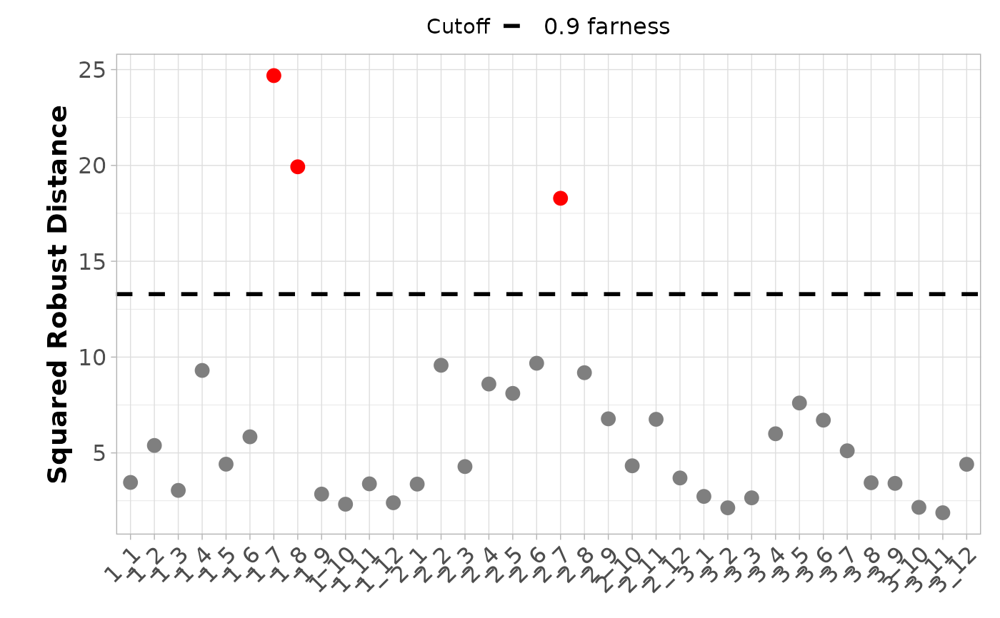

Interval-Mahalanobis distance plot for interval-valued data.
Source:R/plots.r
plot_interval_dist.RdInterval-Mahalanobis distance plot for interval-valued data.
Usage
plot_interval_dist(
dist,
cutoff = NULL,
cutoff_label = NULL,
obs_names = NULL,
sort.obs = TRUE,
color_class = NULL,
color_label = NULL,
palette = NULL,
shape_class = NULL,
shape_label = NULL,
label_obs = NULL
)Arguments
- dist
A numeric vector containing the Interval-Mahalanobis distances for each observation.
- cutoff
A numeric vector containing cutoff values to be displayed as horizontal lines.
- cutoff_label
A character vector containing labels for each cutoff. If NULL (default), default labels are generated.
- obs_names
A character vector containing the names of the observations. If NULL (default), the names are taken from the names of dist.
- sort.obs
Logical. If
TRUE(default), observations are sorted according to their distances.- color_class
A vector indicating the color class of each observation. If NULL (default), all points have the same color.
- color_label
Character. Label for the color class. If NULL (default), no legend for the color class is shown.
- palette
A vector with colors for each color class. If NULL (default), default ggplot2::ggplot2 colors are used.
- shape_class
A vector indicating the shape class of each observation. If NULL (default), all points have the same shape.
- shape_label
Character. Label for the shape class. If NULL (default), no legend for the shape class is shown.
- label_obs
A vector with the names of the observations to be labeled in the plot. If NULL (default), no labels are shown and x-axis labels are displayed.
Value
Returns a plot that displays the Interval-Mahalanobis distances for each observation, highlighting outliers based on specified cutoffs.
Examples
#Create intData object
data(creditcard)
credit_card_int <- creditcard$intData
#Estimate the mean and covariance matrix
credit_card_IMCD<-IMCD(credit_card_int, floor(nrow(credit_card_int)*0.75), "farness", 0.9)
credit_card_outliers <- int_outliers(credit_card_IMCD$robust_dist,
p=credit_card_int@NIVar, cutoff_lvl = 0.9)
credit_card_is_outliers <- as.character(credit_card_outliers$is_outlier)
credit_card_is_outliers[credit_card_outliers$is_outlier] <- "Outlier"
credit_card_is_outliers[!credit_card_outliers$is_outlier] <- "Inlier"
#Plot Interval-Mahalanobis distance plot
plot_interval_dist(credit_card_IMCD$robust_dist,
cutoff = credit_card_outliers$cutoff_value,
cutoff_label = c("0.9 farness"),
obs_names = rownames(credit_card_int),
sort.obs = FALSE,
color_class = credit_card_is_outliers,
palette = c("grey50", "red"))
